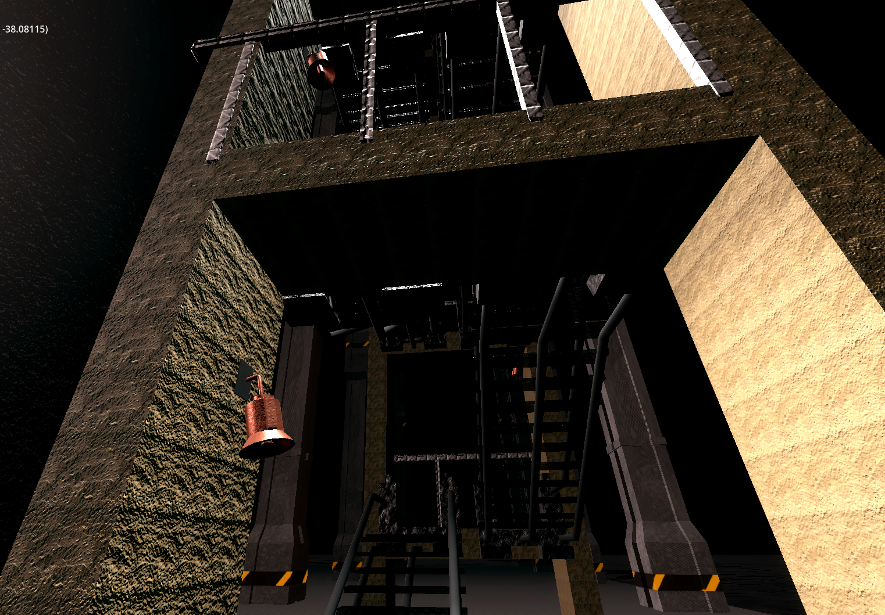
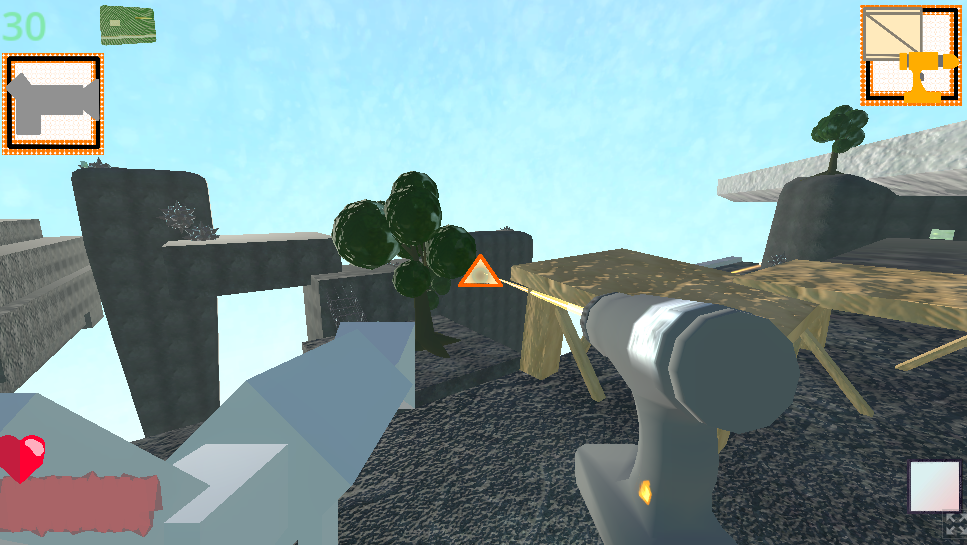
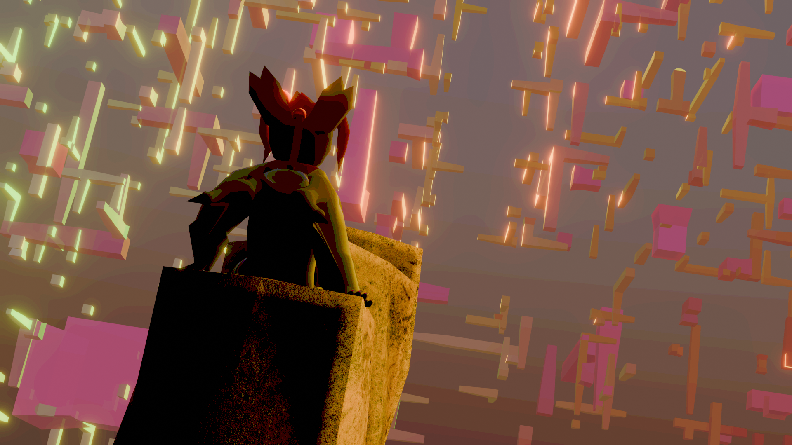
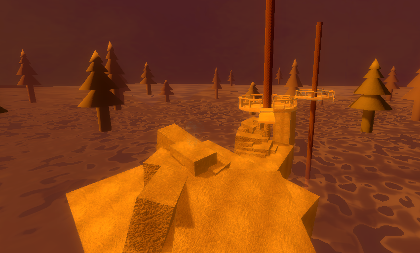

game screenshot 1
This image helps showcase a lot of the messing around I did wiht lighting in a lot of my older projects. This area can be acsessed using the right command (qstart3) on my abandoned project "wier guns". The game can be found on itch.io at https://23elemental23.itch.io/newestweirdguns

game screenshot 2
This one is from an older version of wierd guns. I often start over the same projects from scratch. (probably explains why they all blend in together so much). This one showcases more ui because I was too lazy to disable any of it this time when screenshotting.

game screenshot 3
Another example from weird guns (they wont all be from that same project). This one does an (arguably) better job of showcaseing my normal maps. "Normal mapping" is a strategy where you make a 2d image as a texture, but the colors all represent angles instead; allowing for more details like ridges and grooves in walls and tiles. This area can be acsessed using the right command (qstart3) on my abandoned project "wier guns". The game can be found on itch.io at https://23elemental23.itch.io/newestweirdguns

image name: STARing
image description: This is one I had made right around the time of the assighnment (a little before) which is likley why it looks so recent. There's a bit of posterization, and color effects but they are depth based (how far away something is from the camera, changes how it looks). I jujst quickly reused a character model I had lying around from a previous project because I didnt feel like makeing a whole new one for this.

Color burned
This was origionally intended as a background for an abandoned visual novel project. It started out as a 3d enviorment in blender. After I finished making a render from it, I went back into a 2d art editor (krita) and started playing around with layers, burshes, and posterization to give it the texture and feeling that it has now.

Channelwhen
The name is in refrence to an old point and click game from the 90s. It has a lot of bloom, which is essentially where the brighter parts of the image are blurrier and have more glare. I was also vary carfull witht the lighting and colors on this area as well.
